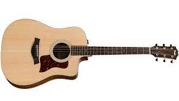
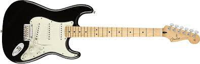
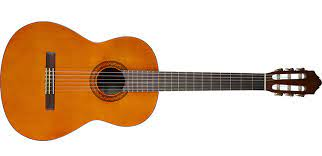
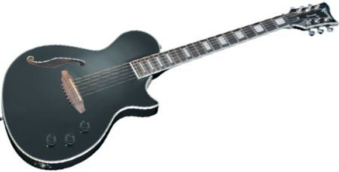

Acoustics
An acoustic guitar is a fretted musical instrument that produces sound via vibrating strings above a hollow chamber in the guitar's body. The vibrations carry through the air and do not require electrical amplification.
Electrics
An electric guitar is a guitar that produces sound by vibrating strings over a pickup that converts the vibrations into electrical signals. Those signals are fed into an amplifier, which projects the musical performance at a wide range of volumes.
Classic
Sometimes referred to as a “Spanish guitar,” a classical guitar has nylon strings, which gives it a warm, mellow tone. Besides classical music, these guitars are used primarily in flamenco music, although “flamenco guitars” differ in both construction (they tend to be made from lighter, thinner wood) and tone.
Electro-Acoustic
An acoustic-electric guitar is an acoustic guitar fitted with a microphone or a magnetic or piezoelectric pickup. They are used in a variety of music genres where the sound of an acoustic guitar is desired but more volume is required, especially during live performances.